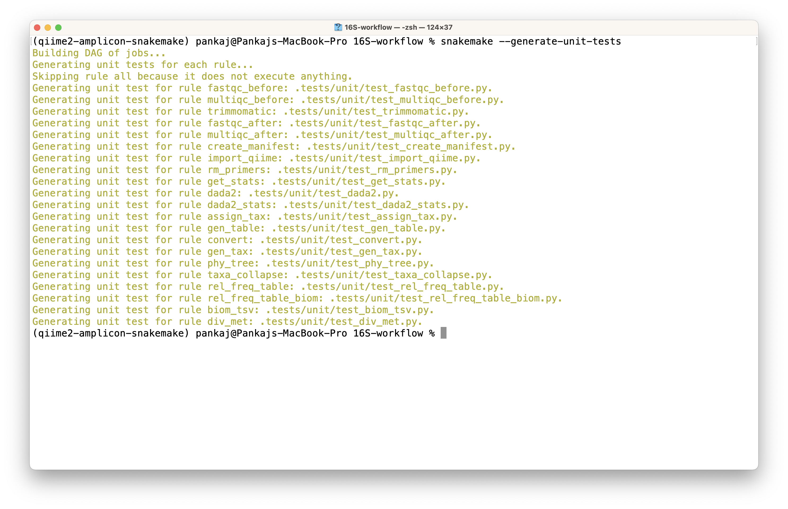
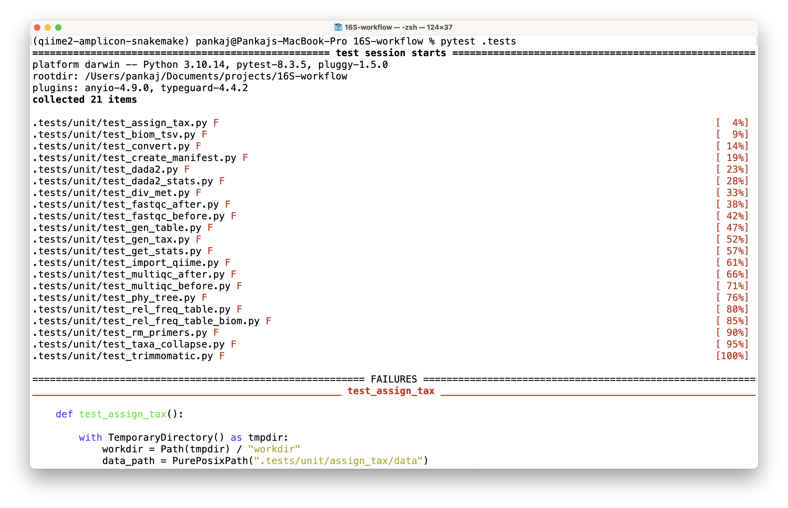

Snakemake is a workflow manager which simplifies the execution of complex pipelines, but as a workflow grows, testing becomes critical. Automated tests help catch errors early and ensure reproducibility. In this post, I will show how to generate and run unit tests for Snakemake workflows.
Generating unit tests for Snakemake workflow
Thanks to Snakemake, unit tests are generated quite easily. You need to follow the two-step process given below.
First, you need to successfully execute your entire workflow with data (preferrable a small dataset that can make testing faster) you want to include in testing.
You then generate a unit test for each of your rules in the workflow using the following command (refer to official documentation for more info)
The execution will generate test codes and directories with some data for testing purposes. The snapshot below shows the results of the workflow execution. 
Generated tests
The above command generates a new directory .tests in your workflow directory. This directory contains the following structure.
.tests/
├── __init__.py
├── common.py
├── rule1/
│ ├── data/
│ └── expected/
├── rule2/
│ ├── data/
│ └── expected/
├── test_rule1.py
└── test_rule2.py
The below table provides a short explanation for each of those file/sub-directory
| Path | Type | Purpose |
|---|---|---|
.tests/ |
Directory | Root folder for all unit test artifacts |
__init__.py |
File | Makes Python treat .tests as an importable package |
common.py |
File | Contains shared pytest fixtures (shared code) and configurations |
rule*/ |
Directory | Per-rule test container (e.g., rule1/, rule2/) |
rule*/data/ |
Directory | Stores input files for testing the rule |
rule*/expected/ |
Directory | Stores expected output files for validating rule execution |
test_rule*.py |
File | Contains pytest test cases for specific rules |
Executing unit tests
Now, we can execute all our generated unit tests using the below command.
Error
However, this execution likely to fail (as it happened with me and others also encountered a similar problem) due to snakemake’s inability to locate the config file. The snapshot below shows the failed execution.

To understand the issue, we will direct our focus on investigating errors occurring while executing a specific test. I am opting here the first rule in the workflow, i.e., running fastqc to generate quality reports.
On inspection of the error messages generated by executing the above command, I discovered this error “Workflow defines configfile config/config.yaml but it is not present or accessible”
This error is due to the use of a temporary directory which is treated as a working directory for snakemake execution for each rule. On execution of the workflow, Snakemake attempts to find the config file and fails. We will address this error by making our config file available in the temporarily created directory (follow the instructions given in the next section).
Solution
To address the error, I made some changes with the help of the Internet. These changes are the following.
- I copied the subdirectory containing the config file (or its symlink) in
unitdirectory in the newly created.testsdirectory and then added the code given below in each test file. This ensures the availability of aconfigfile to the execution environment. This solution is available at this link.
config_path = PurePosixPath(".tests/unit/config")
# Copy data to the temporary workdir.
shutil.copytree(data_path, workdir) # this is where raw_data will be available and results will be stored
shutil.copytree(config_path, workdir / "config")- I also updated
common.pyfile to add customized code to test the generated files. By default, each generated file is compared with its expected file in abyte-by-bytemanner. This may not suit your need if each execution generates a new file. For example, my fastqc test was failing because the rule was generating a new file (e.g., with an updated timestamp) on each execution, causing the comparison to fail.
I hope you find this post helpful.
References
- https://github.com/nikostr/dna-seq-deepvariant-glnexus-variant-calling/blob/main/.tests/unit/test_fastp_pe.py
- https://github.com/snakemake/snakemake/issues/843
- https://github.com/nikostr/dna-seq-deepvariant-glnexus-variant-calling/blob/e6a945b7a0a3ac006c68a5291e28f7bc8fbafdad/.tests/unit/test_bcftools_filter.py#L20-L24